|
|
||||||||||
|
|
||||||||||
|
Построение минимального покрывающего дерева Поиск кратчайших путей из одной вершины Кратчайшие пути для всех пар вершин
Минимальные покрывающие деревьяЗадача построения минимального покрывающего дерева MST (Minimum - Spanning - Tree) рассматривается для взвешенного неориентированного графа [3]. Пусть
имеется связный неориентированный
граф G
= (V,
E).
Для каждого ребра задан
неотрицательный вес w(u,
v).
Задача состоит в нахождении
подмножества ребер
A 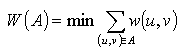 Такое подмножество является деревом и не содержит циклов. Такое дерево называется минимальным покрывающим деревом графа или остовным деревом. 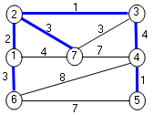
Суммарный вес остовного дерева равен 14. Это дерево не единственное, если заменить ребро (2, 7) на ребро (3, 7), то получается другое остовое дерево с весом 14.
Построение минимального покрывающего дереваОбщая схема алгоритма следующая. Остовое дерево строится постепенно. К изначально пустому множеству ребер А на каждом шаге добавляется одно ребро. Множество А всегда является подмножеством некоторого минимального остова.
Generic
- MST (G, W) 1. A ← 2. while A не является остовом 3. do найти безопасное ребро (u, v) для A
4.
A ← A 5. return A Безопасным
является такое ребро, что объединение A при добавлении к А не может приводить к образованию цикла в множестве ребер А. Общее
правило выбора безопасных ребер
связано с понятием разреза. Разрезом
(S,
V\S) неориентированного графа G = (V, E)
называется разбиение множества его
вершин на два подмножества. Ребро (u, v) 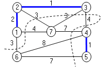 Здесь S = {1,2,3,4,5}, V\S = {6,7}, A = {(1,2), (2,3), (4,5)}. Безопасными ребрами для данного разреза являются ребра (1,6), (2,7) или (3,7). При построении остового дерева постепенно формируется остовый лес GA=(V, A). Если взять одну из связных компонент леса C, рассмотреть относительно ее ребра , соединяющими вершины из С с вершинами не из С, и выбрать среди них ребро наименьшего веса, то это ребро будет безопасным, то его можно добавить к множеству А. Известны два алгоритма построения минимального остовного дерева - алгоритма Крускалла и алгоритм Прима. Оба алгоритма следуют схеме отбора безопасных ребер и являются жадными алгоритмами: на каждом шаге выбирается локально наилучший вариант. В алгоритме Крускалла множество ребер А представляет собой лес из нескольких связных компонент. На каждом шаге добавляется безопасное ребро, концы которого лежат в разных компонентах. В алгоритме Прима множество А представляет собой одно дерево. Безопасное ребро, добавляемое к А, выбирается как ребро наименьшего веса, соединяющее это строящееся дерево с некоторой новой вершиной.
Алгоритм КрускаллаВ любой момент работы алгоритма Крускалла множество выбранных ребер А (часть будущего остова) не содержит циклов. Оно соединяет вершины графа в несколько отдельных связных компонент, каждая из которых является деревом. Среди всех ребер, соединяющих вершины из разных компонент, берется ребро наименьшего веса. Это ребро является безопасным и добавляется к множеству А. Алгоритм Крускалла использует структуру данных для непересекающихся множеств, фиксирующую отдельные связные компоненты. Элементами множеств являются вершины графа, вошедшие в отдельные связные компоненты. Для структур непересекающихся множеств используется операция Find_Set(u), которая возвращает структуру - множество, содержащую элемент u. Кроме того используется операция Union(u, v), объединяющая два множества, которым принадледат элементы u и v.
Псевдокод алгоритма Крускалла выглядит следующим образом:
MST_Kruskall
(G, W)
1. A ←
2. for
(для) каждой вершины u 3. do Make_Set (u)
4.
for (для) каждого ребра (u, v)
5.
do Enqueue (Q, (u,v),
w) 6. while Q не пуста 7. do (u, v) ← Dequeue(Q)
8.
if
Find_Set(u)
9.
then
A ← A 10. Union_Set (u, v) 11. return A
Сначала множество ребер остова - А пусто (строка 1) и есть |V| связных компонент, каждая из которых содержит по одной вершине(строки 2 - 3). Ребра упорядочиваются по возрастанию веса (строки 4 - 5). Для этого целесообразно занести ребра в очередь с приоритетом по весу ребер - w. В цикле (строки 6 - 10) выбирается ребро с минимальным весом, из очереди и проверяется, лежат ли концы ребра в разных компонентах. Если да, то ребро безопасное и добавляется к множеству А, то есть, к лесу. Если концы ребра принадлежат одной связной компоненте, то выбор ребра отвергается. При добавлении ребра к множеству А две компоненты, соединяемые ребром, объединяются в одну (строка 10).
Алгоритм Крускалла с учетом использования очереди с приоритетом для ребер имеет трудоемкость O(E log2 Е).
Иллюстрация работы алгоритма Крускалла: 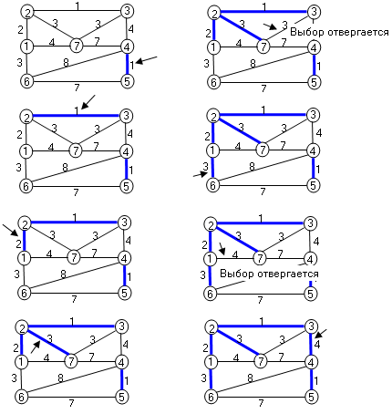
Алгоритм ПримаАлгоритм Прима также постепенно строит остовное дерево, выбирая безопасные ребра. Но здесь растущая часть остова представляет собой единое дерево, множество ребер которого есть множество ребер минимального остовного дерева - A. Формирование дерева начинается с произвольной корневой вершины r. На каждом шаге к дереву добавляется ребро наименьшего веса среди ребер, соединяющих вершины растущего дерева с вершинами, еще не включенными в дерево. При
реализации важно быстро выбирать
безопасное ребро. Для этого в ходе
алгоритма все вершины, еще не попавшие
в остовное дерево, хранятся в
очереди с приоритетом. Приоритет
вершины u определяется значением pr[u],
которое равно минимальному весу ребра,
соединяющего u с одной из вершин дерева
A. Если таких ребер нет, то pr[u]=
Псевдокод алгоритма Прима:
MST_Prim(G,
W, r)
Трудоемкость алгоритма Прима определяется в основном внутренним циклом в строках 7-10, который в целом выполняется |E| раз. Наиболее сложной операцией в этом цикле является операция изменения приоритета вершины, находящейся в очеренди (строка 10). Она имеет трудоемкость log2 V. Таким образом, в целом алгоритм Прима имеет нотацию трудоемкости O(E log2 V).
Иллюстрация работы алгоритма Прима: 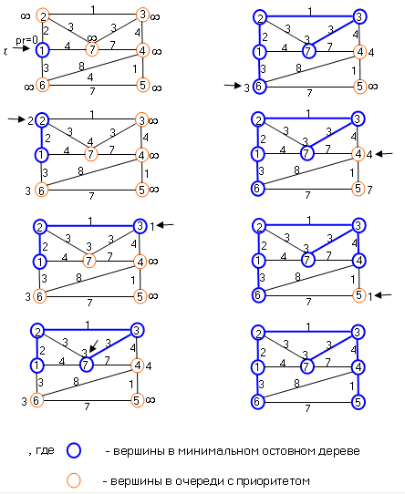
Поиск кратчайших путей из одной вершиныВ различных задачах весами ребер могут быть длины, времена, стоимости, штрафы, убытки и так далее, то есть, любые величины, обладающие свойством аддитивности. Алгоритм поиска кратчайших путей во взвешенном графе применим во многих задачах,
Задача поиска кратчайших путей имеет ограничения. Задача не имеет решения, если при построении кратчайшего пути встретился цикл с отрицательным весом. Это возможно если на орграфе задана весовая функция с отрицательными весами ребер. В этом случае по такому циклу можно проходить бесконечно при постоянном уменьшении веса кратчайшего пути. Если цикл имеет положительный вес, то его можно отбросить из рассмотрения, так как. это не увеличит веса кратчайшего пути. Существует несколько алгоритмов поиска кратчайших путей из заданной вершины во взвешенном орграфе. Алгоритм Дейкстры решает задачу для орграфа с неотрицательными весами. Алгоритм Беллмана - Форда допускает ребра с отрицательным весом и обнаруживает циклы с отрицательным весом. Есть и другие специфические алгоритмы для специальных видов графов.
Рассмотрим задачу нахождения кратчайших путей для ориентированного взвешенного графа G=(V, E, W) с вещественной весовой функцией W. Весом пути p = (v0, v1, ... , vk) является сумма весов ребер входящих в этот путь 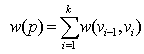 Вес кратчайшего пути из вершины u в вершину v равен: 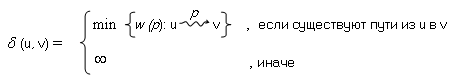 Кратчайший путь из u в v - это любой путь p из u в v, для которого w (p) = 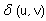 .
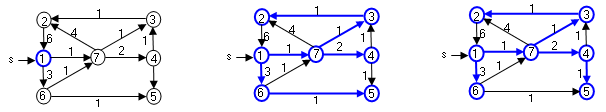 Например, в представленном графе существуют два кратчайших пути с минимальным весом между вершинами 1 и 5: (1, 6, 5) и (1, 7, 4, 5). В задаче поиска кратчайших путей нужно найти не веса кратчайших путей, а сами пути. Для этого используется тот же прием, что и при построении дерева поиска в ширину. Для каждой вершины на кратчайшем пути фиксируется ее предшественник p[u] и вес пути от исходной вершины d[u]. Любой из перечисленных алгоритмов поиска кратчайших путей основывается на приеме, называемом релаксацией ребра, который заключается в постепенном уточнении верхней границы веса кратчайшего пути для каждой вершины [3]. Для
каждой вершины u
Initialize_Single_Source(G, s)
1.
2.
for для каждой вершины u
3.
do d[u] ←
4.
p[v] ← nil 5. d[s] ← 0 Релаксация
ребра (u, v)
Relax (u, v, w)1. if d[v] > d[u] + w(u,v) 2. then d[v] ← d[u] + w(u, v) 3. p[v] ← u
Алгоритм ДейкстрыАлгоритм Дейкстры решает задачу о кратчайших путях из одной вершины для взвешенного орграфа G=(V, E) с исходной вершиной s, в котором веса ребер неотрицательны. В
процессе работы алгоритм поддерживает
множество A Вершины, не лежащие в A, хранятся в очереди с приоритетами Q, в которой приоритет определяется минимальным значением d[u].
Dijkstra(G, W, s)
1.
2.
3. Initialize_Single_Source(G, s) 4. A ←
5.
for для каждой вершины u
6.
do Enqueue(Q, u, d[u])
7. while Q не пуста 8. do u ← Dequue (Q)
9.
A ← A
10.
for для каждой вершины v
11.
do Relax (u,
v,
w)
12.
return A
Иллюстрация работы алгоритма Дейкстры (s = 1:
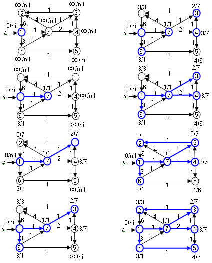
Демонстрация работы алгоритма Дейкстры и тренажер
Инструкция к демонстрации и тренажеру
Кратчайшие пути можно построить, пользуясь ссылками на вершины - предшественники - p[u], зафиксированные в вершинах при построении кратчайших путей. Для этого можно воспользоваться алгоритмом построения путей в дереве обхода в ширину Path (G, s, v).
Оценка времени работы алгоритма ДейкстрыЕсли очередь с приоритетом - Q реализована в виде обычного массива, то стоимость операции Dequeue(Q) равна O(V). Поскольку алгоритм Дейкстры делает |V| таких удалений из очереди, то суммарная стоимость удалений из очереди оценивается O(V2). Общая стоимость релаксаций оценивается количеством ребер и в конечном счете равна O(E). Таким образом, общая стоимость алгоритма Дейкстры равна O(V2 + E) = O(V2). Если граф разреженный, то имеет смысл организовать очередь с приоритетом в виде двоичной кучи. Тогда стоимость операции Dequeue(Q) равна O(log2 V). Стоимость построения очереди Q равна O(V). Присваивание d[v] ← d[u] + w(u, v) в функции Relax реализуется при сканировании двоичной кучи и оценивается как O(log2V). Количество релаксации равно E. Таким образом, общая стоимость алгоритма Дейкстры равна O((V + E) log2 V). Поскольку E |V| + 1, то оценка трудоемкости алгоритма Дейкстры имеет вид O(E log V).
Алгоритм Беллмана-Форда.Алгоритм Беллмана-Форда решает задачу о кратчайших путях из одной вершины для случая, когда веса ребер могут быть отрицательными. Алгоритм возвращает значение TRUE если в кратчайших путях нет отрицательного цикла и FALSE, если такой цикл есть. В первом случае алгоритм находит кратчайшие пути и их веса, во втором случае - кратчайших путей нет. Подобно
алгоритму Дейкстры алгоритм
производит | V[G] | - 1 релаксацию всех
ребер графа, пока вес кратчайшего пути d[u]
у вершин графа не сравняются с
минимальным весом (s,
u) для всех вершин u
Bellman_Ford (G, W, s)
1.
2.
3. Initialize_Single_Source(G, s) 4. for i ←1 to | V[G] | - 1
5.
do for для каждого ребра (u, v) 6. do Relax (u, v, w)
7.
for для каждого ребра (u, v) 8. do if d[v]>d[u] + w(u, v) 9. then return FALSE 10. return TRUE.
После инициализации вершин алгоритм |V| - 1 раз перебирает по все ребра и подвергает каждое из них релаксации. Количество итераций равно |V| - 1, так как на кратчайших путях не может быть более |V| - 1 ребер. После релаксаций алгоритм проверяет нет ли цикла отрицательного веса, достижимого из исходной вершины. Признаком этого является наличие на кратчайшем пути ребер (u, v), для которых d[v] > d[u] + w(u, v). Время работы алгоритма - O(VE).
Иллюстрация работы алгоритма Беллмана - Форда (s = 1): 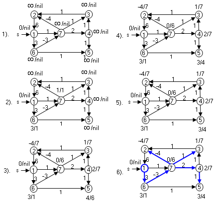
Кратчайшие пути в ациклическом ориентированном графеВ ациклическом орграфе G = (V, E) кратчайшие пути из одной вершины можно найти за время O(V + E), если проводить релаксацию ребер в порядке, заданном топологической сортировкой. В ациклическом графе кратчайшие пути всегда определены, поскольку циклов нет. Алгоритм топологической сортировки располагает вершины орграфа в линейном порядке так, что все ребра идут в одном направлении. После этого вершины просматриваются в этом порядке и для каждой вершины подвергаются релаксации все исходящие ребра.
DAG_Pathes (G, W, s)
1.
2.
3.
Q ← Topological_Sort
(G) 4. Initialize_Single_Source(G, s) 5. while Q не пуста 6. do 7. u ← Dequeue(Q)
8.
for для всех
вершин v 9. do Relax (u, v, w)
Иллюстрация работы алгоритма (s = 1):
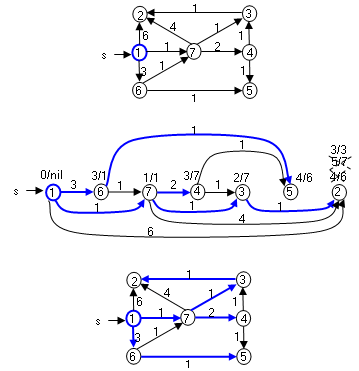
Оценка времени алгоритма поиска кратчайших путей в DAGВремя топологической сортировки (время обхода в глубину) равно O(V + E). Время инициализации вершин равно O(V). В цикле 5 - 9 каждое ребро обрабатывается один раз, то есть, общее время обработки ребер равно O(E). Таким образом, общее время алгоритма оценивается величиной O(V + E).
Кратчайшие пути для всех пар вершин взвешенного ориентированного графаЗадача нахождения кратчайших путей из всех вершин формирует таблицу весов, в которой на пересечении строки i и столбца j, находится вес кратчайшего пути из i в j и информация о самом пути. Эту
задачу можно решить для орграфа G = (V, E) с
заданной весовой функцией W, если V
раз, поочередно применить алгоритм
поиска кратчайших путей для каждой из
вершин графа . Если ребра имеют
неотрицательные веса, то можно
применить алгоритм Дейкстры. Общее
время алгоритма составит O(V Если
в орграфе есть ребра с отрицательным
весом, то можно использовать более
медленный алгоритм Беллмана - Форда и
общее время составит O(V2 Изобретены более быстрые алгоритмы. Наиболее удобны эти алгоритмы для орграфов, представленных матрицей смежности. Исходными данными для этих алгоритмов является матрица весов взвешенного орграфа W = (wij), элементы которой равны: 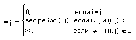 Веса ребер могут быть отрицательными, но предполагается, что циклов отрицательного веса в орграфе нет. Алгоритм
формирует матрицу
весов кратчайших путей D = (dij),
элементы которой dij
= d(i, j)- весу кратчайшего пути. Кроме
того, формируется матрица
предшествования P =(pij),
в которой pij
является вершиной, предшествующей
вершине j на одном из кратчайших
путей i 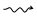 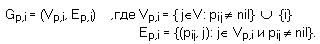 Имея такую матрицу предшествования, можно построить путь из вершины i в j: All_Pathes(P, i, j) 1. if i = j
2.
then Enqueue(Q,
i)
3. else if pij = nil 4. then return error "пути из i в j нет" 5. else All_Pathes(P, i, pij ) 6. Enqueue(Q, j)
В результате работы алгоритма в очереди Q сформирована последовательность вершин, задающая кратчайший путь ij.
Алгоритм ФлойдаАлгоритм Флойда [3] является алгоритмом динамического программирования. Алгоритм допускает ребра с отрицательным весом, но не допускает циклы с отрицательным весом. Введем понятие промежуточной вершины: если есть простой путь p = <v1, v2, . . . ,vi >, то вершины v2, v3, ... vi-1 называются промежуточными. Для
простоты будем обозначать вершины
графа G числами 1, 2, . . . ,n. Рассмотрим
подмножество вершин k Среди них можно выделить путь с минимальным весом - (i, j). Вес этого пути можно получить, зная вес минимального пути между i и j, включающего вершины {1, 2, . . . ,k-1}. При добавлении новой промежуточной вершины k между вершинами i и j может возникнуть новый кратчайший путь, проходящий через вершину k, или может остаться кратчайшим старый путь, включающий вершины {1, 2, . . . ,k-1}. При добавлении в качестве промежуточной вершины k новый путь разбивается на два участка: 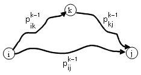
Пути
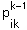 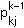 Исходя из этих рассуждений, согласно методу динамического программирования можно определить рекуррентное соотношение между оптимальными решениями подзадач. Пусть
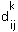 При
k = 0 промежуточных путей нет и 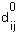 В общем случае: 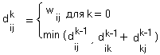 Матрица
Dn = ( 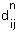 Помимо весов кратчайших путей параллельно в матрице предшественников P фиксируются вершины - предшественники 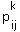 .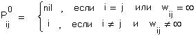
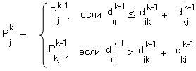
Входом алгоритма Флойда является граф и его весовая функция, представленная в виде матрицы весов - W, результатом - матрица весов кратчайших путей Dn и матрица предшественников Pn. Floyd (G, W)1. n ← |V[G]| 2. D ← W 3. for i ←1 to n 4. do for j ← 1 to n
5.
do if i 6. then pij ← i
7.
else pij←nil
8. for k ← 1 to n 9. do for i ← 1 to n 10. do for j ← 1 to n
11.
do
← 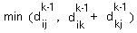 12. return D
Иллюстрация работы алгоритма: Дан граф: 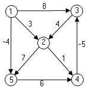 В начале работы алгоритма (строки 2 - 7) инициализируются матрица весов кратчайших путей - D и матрица предшественников - P: 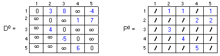 , где / = nil - указатель на вершину - предшественник. Затем в цикле (строки 8 - 11) в матрицах D и P пересчитываются веса кратчайших путей и вершины - предшественники при последовательном добавлении новых промежуточных вершин в каждый из путей (k = 1, 2, . . . , V): 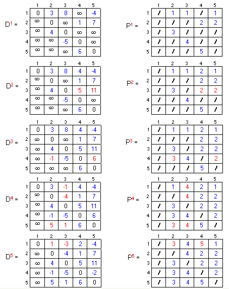
Алгоритм Джонсона нахождения всех пар кратчайших путейЭтот алгоритм допускает отрицательную весовую функцию графа. Алгоритм либо формирует матрицу кратчайших путей, либо сообщает, что в графе имеется цикл отрицательного веса. Работа алгоритма основана на использовании алгоритмов Беллмана - Форда и Дейкстры. Алгоритм Джонсона работает эффективнее, чем алгоритм Флойда для разреженных графов. Его время имеет нотацию O(V2 log V + VE) [3]. Особенностью алгоритма является изменение весов ребер графа таким образом, чтобы они были неотрицательны и можно было бы применить алгоритм Дейкстры для каждой вершины. При изменении весов ребер должны быть соблюдены следующие условия:
Необходимо подобрать способ изменения весов ребер с соблюдением этих условий. Пусть дан граф G=(V, E) с весовой функцией W. Введем весовую функцию для вершин графа - H. Для орграфа G=(V, E) построим эквивалентный орграф G'=(V', E') с дополнительной вершиной s, которая имеет только исходящие дуги нулевого веса ко всем остальным вершинам: 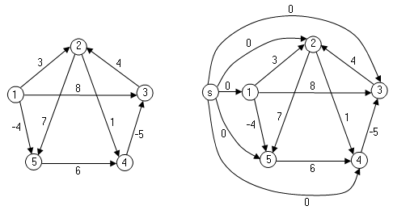 Введение этой вершины не изменит путей в новом графе, поскольку вершина s не может быть вставлена в качестве промежуточной в какие - либо пути, так как не имеет входящих ребер. Она может быть только начальной вершиной путей. Новый граф содержит цикл отрицательного веса, если таковой содержится в исходном графе. Пусть
граф G', как и граф G не содержит цикла
отрицательного веса. Пусть вес каждой
вершины равен весу кратчайшего пути до
этой вершины s, то есть, h(v) = (s,
v) для всех вершин v 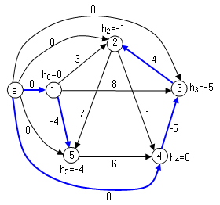 Рассмотрим новую весовую функцию ребер ~W такую, что ~w(u, v)= w(u, v) + h(u) - h(v). Тогда любой кратчайший путь p = (v0, v1, . . . , vk) относительно весовой функции W будет совпадать с кратчайшим путем относительно новой весовой функции ~W. Вес любого пути v0 vk относительно ~W равен: ~w(p) = w(p) + h(v0) - h(vk)
Для всех путей с фиксированным началом и концом разница между старым и новым весом постоянна и поэтому кратчайшие пути для новой и старой весовой функции совпадают: ~w(p)= w(v0, v1) + h(v0) - h(v1) + w(v1, v2) + h(v1) - h(v2) +. . . + w(vk-1, vk) + h(vk-1) - h(vk) = = w(v0, vk,) + h(v0) - h(vk) Второе следствие при таком преобразовании заключается в следующем. Если граф G содержит отрицательный цикл относительно весовой функции W, то он содержит этот же отрицательный цикл относительно функции ~W. Это следствие исходит из того, что вес цикла равен: ~w(p)= w(p) + h(v0) - h(v0).
Для
вершин, лежащих на кратчайшем пути,
выполняется свойство: h(v) 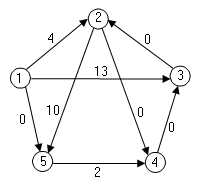
Далее для прокладки кратчайших путей используется алгоритм Дейкстры поочередно для каждой вершины: 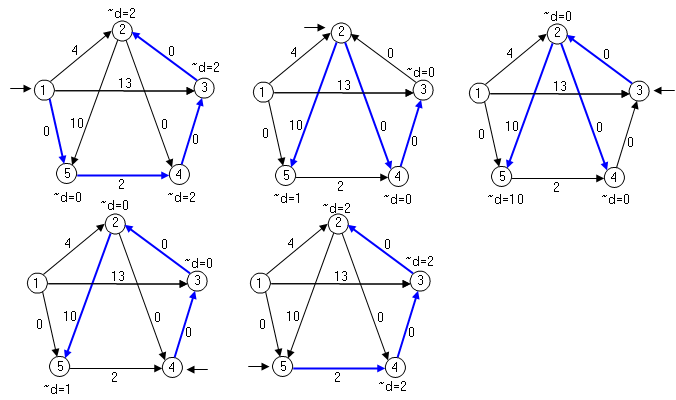 , где ~d[v] - вес кратчайшего пути от заданной вершины до вершины v в графе с весовой функцией ~W. Можно привести веса кратчайших путей uv к исходной весовой функции W, используя формулу d[v] = ~d[v] + h[v] - h[u]: 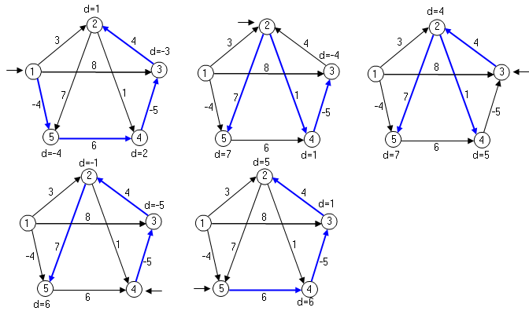 Орграф для алгоритма Джонсона лучше представить в виде списков смежности. Это представление больше подходит для разреженных графов. Алгоритм возвращает матрицу D = |dij| размера |V| * |V|, где dij = d(i, j), или возвращает сообщение о том, что граф имеет отрицательный цикл. Вершины нумеруются от 1 до |V|. Псевдокод алгоритма Джонсона:
1.
Создать граф G', для которого V[G'] = V[G] 2. if Bellman_Ford(G', W, s) = FALSE 3. then return ошибка "имеется цикл отрицательного веса"
4.
else for для каждой
вершины v
5.
do h[v] ← d[v]
6. for для каждого ребра (u, v) 7. do ~w(u, v) ← w(u, v) + h(u) - h(v)
8.
for для каждой вершины u
9.
do
Dijkstra(G', ~W, u)
10.
for для каждой вершины v
11.
do d[v] ← ~d[v] + h[v] - h[u]
12. return D Общее время работы алгоритма Джонсона - O(VE log V), что меньше, чем в алгоритме Флойда - O(V3).
|
||||||||||
|
|
||||||||||